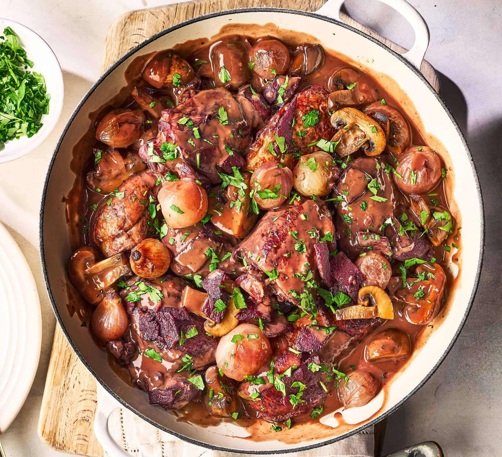
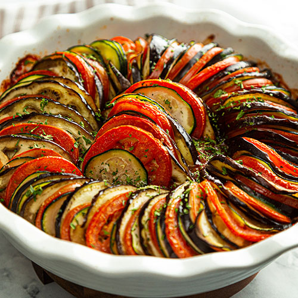
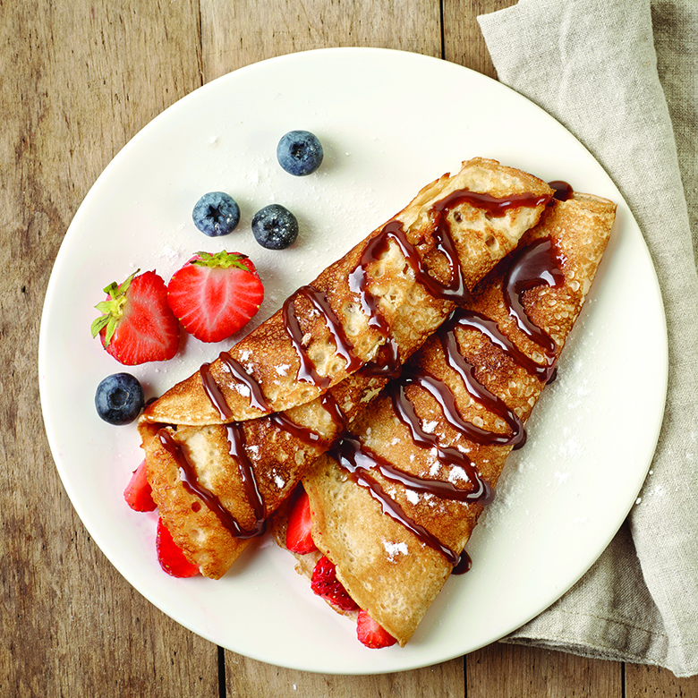
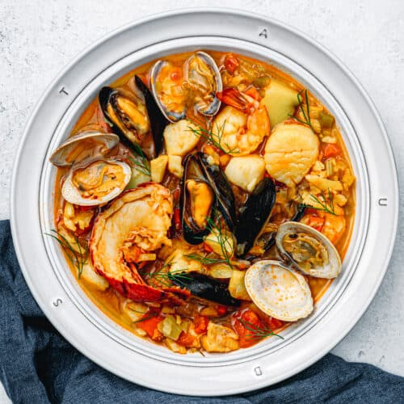
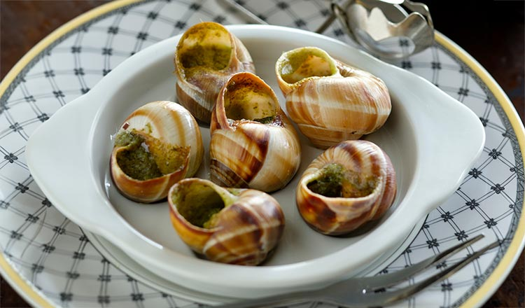

Popular French Dishes
Coq au Vin
The French are big gourmets, not only in food but also in wine. Coq au Vin is a classic French dish made with chicken braised in red wine, lardons, mushrooms, and optionally garlic.
A red Burgundy wine is typically used, though many regions of France make variants using local wines, such as coq au vin jaune or coq au riesling.

Ratatouille
An iconic dish, ratatouille is an absolute must-try, and i'm not talking about the rat. Ratatouille is a traditional Provençal stewed vegetable dish, originating in Nice, and is made with tomatoes, zucchini, eggplant, and bell peppers.

Crêpes
Crêpes are everywhere in France and can be sweet or savory, acting as main dishes, sides, or even desserts.
They are thin pancakes that can be filled with a variety of sweet or savory ingredients, such as Nutella, fruits, cheese, or ham.
I personally love some golden syrup on my crêpes, and I find it imperative that you try this dish if you decide to visit France.

Bouillabaisse
Bouillabaisse is a traditional fish stew from Marseille, made with various kinds of fish, shellfish, and aromatic herbs.
The word is originally a compound of the two Provençal verbs bouillir (to boil) and baisser (to lower). It is one of France's most iconic dishes and is recommended to any seafood enjoyer.

Escargots de Bourgogne
Snails. Escargots de Bourgogne are snails cooked in garlic butter, parsley, and sometimes white wine, a delicacy often enjoyed as an appetizer.
They are possibly the best-known French food of all-time. A prized French cuisine and another absolute must-try for tourists.
I can assure you if you give them a shot you won't be as dissapointed as you may be disgusted.
